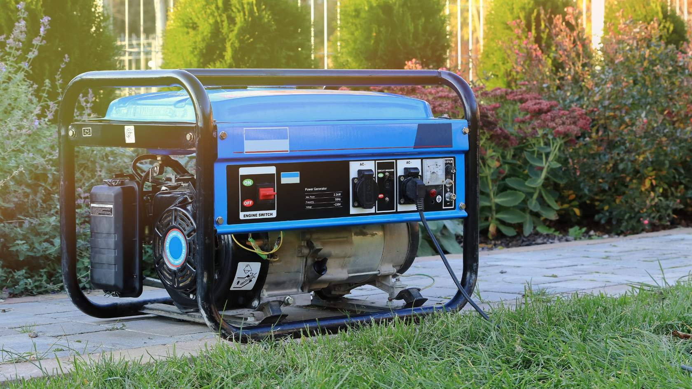
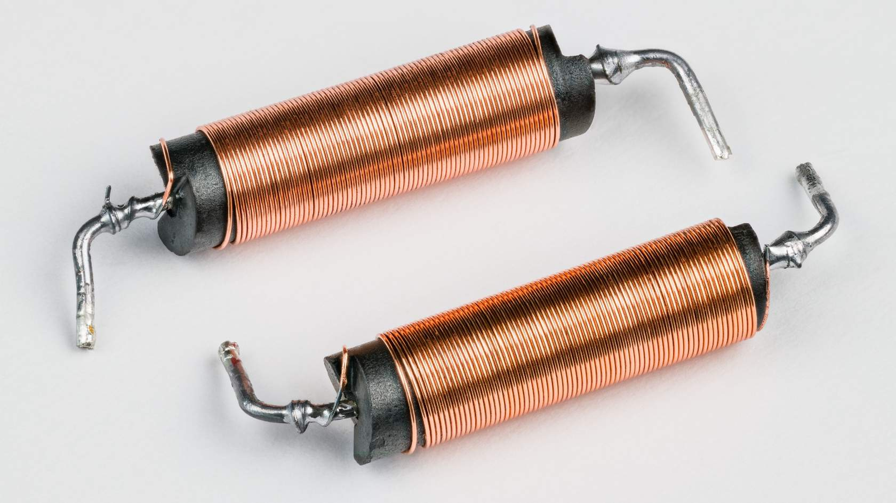
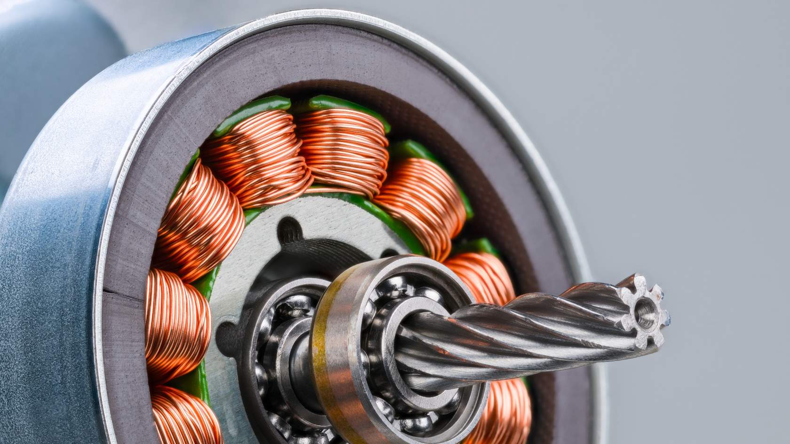

Field Dynamics.
The Physics of Interaction
Electromagnetism is the production of a magnetic field by current flow in a conductor. Unlike permanent magnets, these fields are dynamic—they can be turned on, off, or reversed instantly.
This field creates a force (Lorentz Force) that interacts with other magnets to create motion in motors and brakes.
Changing fields allow energy to jump between circuits without physical contact, as seen in transformers.

The 3D Coordinate System
DOT_CROSS_VOTEX_2.1.1Towards Observer (●)

When the "arrowhead" (dot) is visible, the current is emerging from the surface.
Field Direction: Anticlockwise.
Visual Proof: Reference the diagram "Magnetic field lines surrounding a conductor with current flow towards an observer, pointing in.jpg".
Away from Observer (X)

When the "feathers" (cross) are visible, current is receding into the surface.
Field Direction: Clockwise.
Visual Proof: Reference the diagram "Magnetic field lines surrounding a conductor with current flow away from an observer, pointing.jpg".
2.1.2 Infinite Concentric Rings
The magnetic field does not just exist at one point; it occupies the entire space around the conductor as infinite concentric rings.
- Density Gradient: Field lines are closest together near the conductor surface.
- Radial Decay: The field strength weakens significantly as you move away ($B \propto 1/r$).

The Trade-Standard Grip
Procedure for Analysis
Grasp the conductor.
Use the RIGHT HAND only. Left hand is for electron flow (Physics only).
Align the Thumb.
Thumb must point in the direction of CONVENTIONAL CURRENT flow (+ to -).
The Resultant Curl.
The direction your fingers wrap identifies the path of the Magnetic Flux ($\Phi$).

Adjacent Conductor Interaction
When two adjacent conductors carry current, their individual magnetic fields interact. This interaction creates physical mechanical forces between the wires, which is a major factor in switchboard busbar bracing and cable tray layout.
Field Lines Link Up
When currents flow in the SAME direction, the magnetic fields between the conductors are in opposite directions and cancel out, while the outer fields link up.
The conductors experience an ATTRACTIVE force, pulling them together.

Fields Distort & Repel
When currents flow in OPPOSITE directions, the magnetic fields between the conductors point in the same direction. This creates a highly compressed, intense field between them.
The conductors experience a REPULSIVE force, pushing them apart.

The Solenoid (The Coil)
A solenoid is created when several turns of insulated conductor are wound around a ‘former’ into a coil. This geometric arrangement forces the magnetic fields of each individual turn to add together.
Field Concentration
Inside the coil, the magnetic field is uniform and highly concentrated. Outside, the field mimics that of a standard Bar Magnet.
The 'Former'
The former provides structural shape. Adding a Ferromagnetic Core will multiply the field strength by thousands of times.
In industrial applications, solenoids are the "muscles." They pull in contactors to start large motors or open pneumatic valves for automation.

Right Hand Rule for a Solenoid
When current flows through the solenoid, a magnetic field is set-up around each individual ‘turn’ of the coil. These individual magnetic fields join together to create one ‘strong’ electromagnet.
Grasp the solenoid in your right hand.
Physically orient your hand around the coil winding.
Align your fingers.
Fingers point in the direction of the current around the solenoid.
Locate the North Pole.
Your thumb points in the direction of the North Pole of the solenoid.

Field Geometry & Polarity
The Bar Magnet Analogy
The magnetic field pattern around a solenoid carrying current is identical to that of a bar magnet. The magnetic flux extends out from the North Pole and returns through the South Pole.
Inside the solenoid, the field lines are parallel and uniform, traveling from South to North to complete the loop.
Cross-Sectional Analysis
To understand why this unified field forms, we look at the cross-section. By applying the right-hand grip rule to each individual turn:
-
Fields between adjacent turns cancel out where they oppose each other.
-
Fields inside the core reinforce each other, creating a concentrated flux path.


Magnetomotive Force (Fm)
Magnetic "Pressure"
When current flows in a solenoid, a Magnetomotive Force (Fm) is created. This is the magnetising force—essentially the "magnetic pressure"—that drives flux out of the North Pole and into the South Pole.
The Variable Breakdown
- $F_m$ = Magnetomotive Force in Ampere-Turns (At)
- $I$ = Current in Amperes (A)
- $N$ = Number of Turns (t) in the coil
This equation is included for conceptual explanation only. You are not required to perform Fm calculations for this specific unit, but understanding the relationship between turns and current is essential for troubleshooting contactors and relays.

Electromagnetic Forces (Mechanical)
Physical Interaction
Electromagnetic forces exist between any two current-carrying conductors installed in close proximity. Whether inside switchboards or clipped to walls, conductors must be securely fixed to ensure they do not move when energised.
The higher the current, the greater the force between the conductors.
Normal vs. Fault Conditions
Normal: Busbars inside large switchboards can carry hundreds of amperes. The forces are present but managed by standard supports.
Fault: Under short-circuit conditions, thousands of amperes can flow. This creates extreme forces that can severely distort busbars and cause catastrophic damage to the switchboard.

To prevent movement and distortion, busbars and large cables must be securely bolted or "cleated" in position to withstand these potential mechanical stresses.
Direction of Force
The direction of the mechanical force between two conductors depends entirely on the direction of current in each. Whether they pull together or push apart, they will move if not securely fixed.
Magnetic Lines Link Up
When current flows in the same direction, the magnetic lines of force link up to encircle both conductors. This creates a tension that pulls the conductors toward each other.

Fields Distort & Push
When currents flow in opposite directions, the magnetic lines of force between the conductors do not link up. Instead, they oppose each other, creating a high-pressure zone that repels the conductors.

Calculating Force
The force between current-carrying conductors is directly proportional to the current in each and inversely proportional to the distance between them.

Worked Example
Calculate the force acting between two conductors separated by a distance of 50 mm. The current in each conductor is 100 amperes.

Applying the values to the electromagnetic force equation.

Always convert millimetres (mm) to metres (m) before plugging them into the formula.
Example: 50mm ÷ 1000 = 0.05m.
Getting this wrong is the most common reason for failed calcs in the trade school assessments.
Applications of Electromagnets
An electromagnet is any device constructed from many turns of insulated conductor wound into a coil. When current flows, a magnetic field is created. To multiply this strength, the coil is wound around a ferromagnetic core.
From the smallest relay to a massive industrial crane, these principles drive the hardware that controls modern electrical systems.

Tractive Operation
The electromagnet attracts a pivoted armature, which is mechanically connected to contacts that open or close the circuit.
Solenoid Operation
The electromagnet surrounds a sliding plunger. When energised, the plunger is drawn into (or pushed out of) the coil center.
Lifting Operation
When energised, the electromagnet attracts magnetic material for transportation or levitation.
Motor & Generator Field Coils
The Stator Field
Electromagnets are the heart of A.C. and D.C. machines. Field coils are wrapped around iron "field poles" to create a concentrated electromagnetic field.
Without these energized coils, a motor would have no magnetic "push" to turn the shaft, and a generator would have no magnetic flux to "cut" and produce voltage.
In larger industrial motors, these coils are often the first thing we check for "continuity" and "insulation resistance" during a breakdown, as heat can degrade the thin insulation on the windings.

Transformer Windings
Mutual Induction Core
A basic transformer consists of two separate electromagnets (the Primary and Secondary windings) wrapped around a common ferromagnetic core.
The Primary Winding receives electrical energy and creates a varying magnetic field in the core.
The Ferromagnetic Core provides a low-reluctance path to channel that magnetic flux to the second coil.
The Secondary Winding uses the passing magnetic field to induce a new voltage, ready for use in the circuit.

Note: There is no electrical connection between the primary and secondary; the energy is transferred purely via the magnetic field.
Conclusion & Review
Key Takeaways for the Trade
Magnetic Theory
- Solenoids: Mimic bar magnets with distinct North/South poles.
- Fm (At): The pressure behind the flux, calculated as $Current \times Turns$.
Mechanical Effects
- Forces: Currents in the same direction attract; opposite directions repel.
- Faults: High fault currents (kAmps) create massive distortion forces on busbars.
Ready for Topic 3?
You’ve mastered Electromagnetism. The next step is applying these fields to AC Circuits and Inductance.